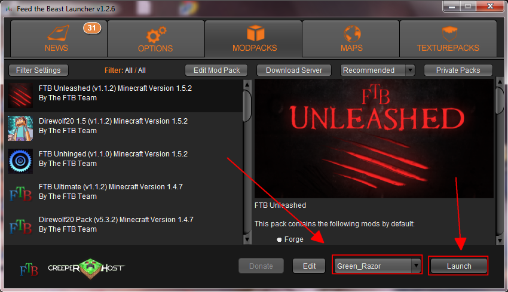
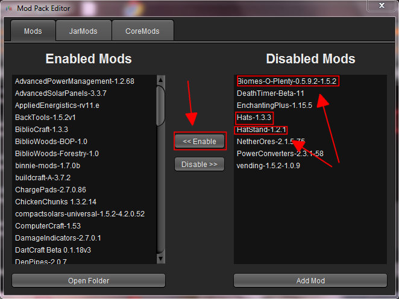

- Download the FTB launcher from here. If you are on Windows, get the .exe file, if you are on Mac, get the .jar file
- Put the .exe in its own folder somewhere on your computer.
- Run the .exe. Be patient...it may take some time for it to configure itself the first time.
- From the launcher, select "Unleashed" from the list of mod packs on the left and sign in with your mojang account
information.

- In order to use our server, you'll need to enable a few extra mods. After you launch FTB once, quit and restart the launcher. From the main screen, select "Unleashed" again in the list on the left. Then click "Edit mods" in the top menu.
- From the list of mods on the right, select each of the following mods and click "Enable" after each: Biomes O'Plenty, Hats and Hatstand.

- Launch minecraft again. You will see the mojang screen for awhile...be patient. Then hopefully, YOU'RE IN!
Any problems or questions? email, skype or text me!